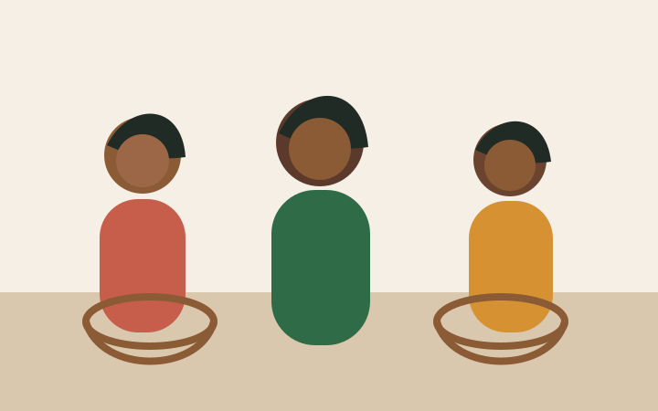

Community impact
Member photographs and stories should be added after consent is confirmed. The placeholder image shows where real smartphone photos will be used.
CI-11 member photosIA-About/Members
This page uses the mission/history document, founding year, registration status, and member information from the content inventory.
History
Kyankima Women's Cooperative is a registered community-based organization in Mukono District. It brings together 47 women who work in small-scale agriculture, handcraft production, and community health awareness.
The website presents this story in plain language because new customers, donors, and partners need to understand who the cooperative is before they make an enquiry or offer support.

Member photographs and stories should be added after consent is confirmed. The placeholder image shows where real smartphone photos will be used.
To strengthen women's livelihoods through cooperative production, fair product marketing, and practical community support.
The site reserves space for the verified registration wording so buyers and partners can confirm legitimacy.
Customers in Mukono and Kampala, donors, grant reviewers, health readers, and cooperative members using mobile phones.